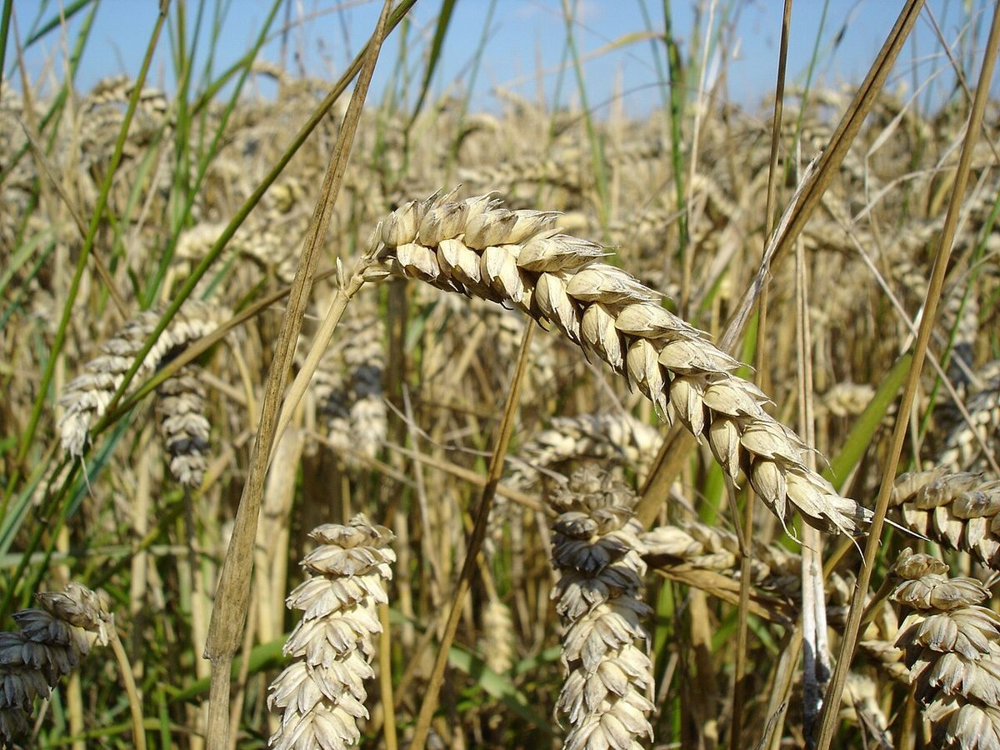

テーマ「横にパンする5カット」
店名の響きから、カメラを横に振る
店名の由来は分かりません。制作側は「Tapan」の末尾の「pan」から、カメラを水平に振る撮影用語「パン」を連想しました。そこでこのサイトは、5ページを左から右へ1本の線上に並べ、カメラが横に振れていくような作りにしています(上のナビの1〜5が、その停止位置です)。お店の理念・由来とは無関係の、制作側の連想です。
5カットの流し撮り(イメージ)
写真はお店のものではなく、国外または撮影地不明のフリー素材です。横にスクロールすると続きが見られます。
- CUT 100:00

イメージ写真 広く見渡す
- CUT 200:01

イメージ写真 寄って見る
- CUT 300:02

イメージ写真 粉になる(イメージ)
- CUT 400:03

イメージ写真 のばして休ませる(イメージ)
- CUT 500:04

イメージ写真 焼き色がつく(イメージ)